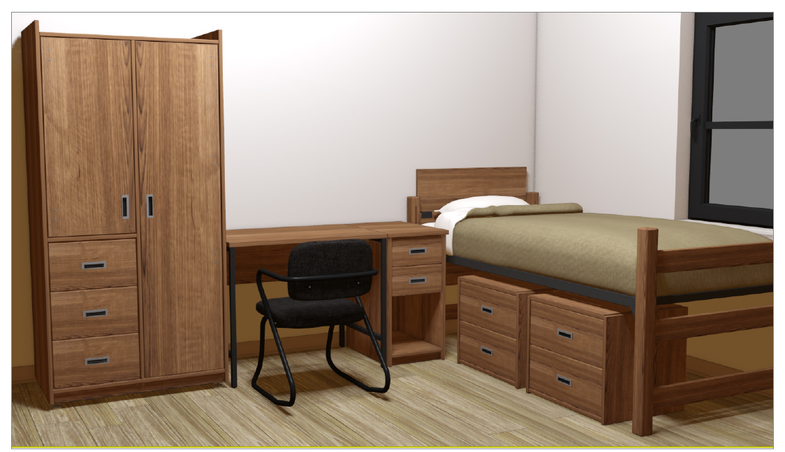
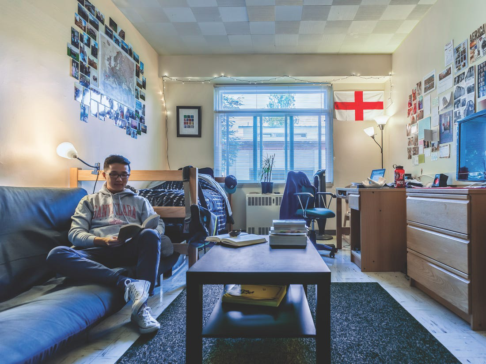
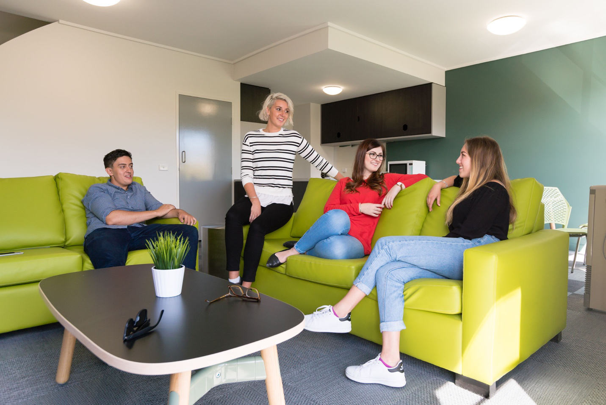

AU Students’ Campus Life: Interesting Transition to Dorm-life
University life was full of vitality and charm. One of the most refreshing and enjoyable experiences for freshmen was living on campus instead of at home for the first time. I interviewed three AU students from different countries who lived on campus about their transition to dorm-life. They shared exciting experiences and useful suggestions to help freshmen make a smooth transition into apartment life in AU.
Living in the same apartment with friends was very exciting. Perhaps the most significant difference for students was that they were not accompanied by their families but sharing a space with friends. My interviewers gave different perspectives about their transition. Jack, a student from China, who spoke Cantonese but not Mandarin, said that “a two-room apartment was really comfortable, because there was a huge space to move around and it was quiet.” He explained that “it was not the first time I had lived in a dorm. However, there were eight people in one dorm in high school, and its space was not as big as here.” I agreed with him because I had the same experience. “It was a dream mare!” We said uniformly. The second student, Jason, Vietnam, said it was great to live with peers. “We went to class, ate, and played basketball together almost every day.” He added that “we soon got to know each other because of the dorm-life, and agreed to go to Vietnam for the summer vacation.” Therefore, the person you lived with might be your best friend in college.
Cooking was challenging but exciting and new. Perhaps at home, most parents cooked for their children, but in the dorm, there was a communal kitchen for students to cook together on each floor. For some students, like Jason, it was the first time he cooked for himself. “What impressed me the most was the first time I cooked when I first transited into the campus,” Jack recalled with a smile. “It was a terrible meal, but I liked cooking after that.” The third student, Abbas, from India, "it was so much fun cooking with my roommate,” said excitedly. “I cooked Indian dishes and ate with my roommate.” Therefore, the transition from home to dorm-life seemed to be a transition from a foodie to a chef.
 Images from AU website.
The three interviewers I spoke to provided some useful suggestions for freshmen to have a smooth transition to living on campus. Abbas said that “the harmonious dormitory atmosphere was not only conducive to your daily mood, but it could also reap a sincere friendship." Hence, he recommended that “communicating and interacting with your roommate was important.” Jack suggested that “if you and your roommate had different personalities, you could also find lots of other friends in the dorm who shared the same interests.” Jack went on that “the lobby was a good place to go because it had entertainment facilities and meeting rooms for discussion and play.” Jason added that “even though transitive to dorm-life could be interesting, did not forget to use Facetime to talk to your family more about what was happening on campus," because coordinating campus life and family time was also important.
In conclusion, dorm-life was exciting, but a little challenging. These tips above might not be for everyone, but exploring the rules of living on campus could be an interesting and memorable experience. If you need help with your new dorm-life, keep an eye on our newspaper article.
Image from AU website.